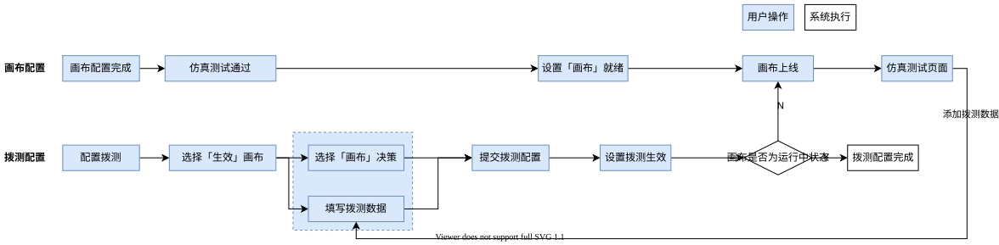
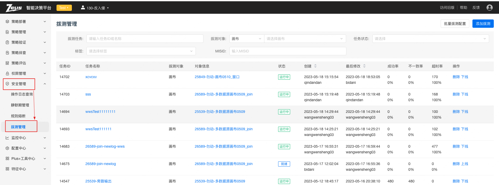
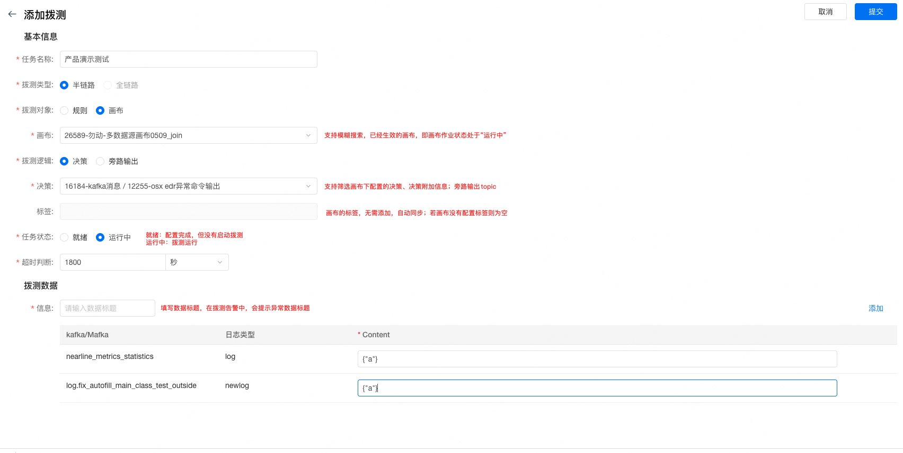
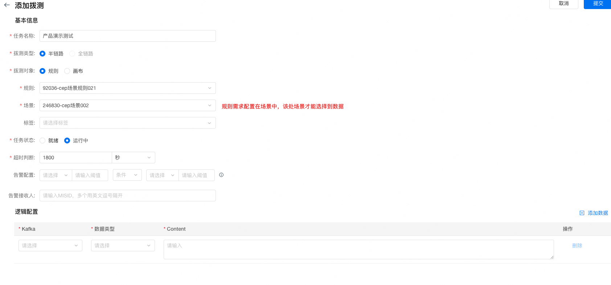
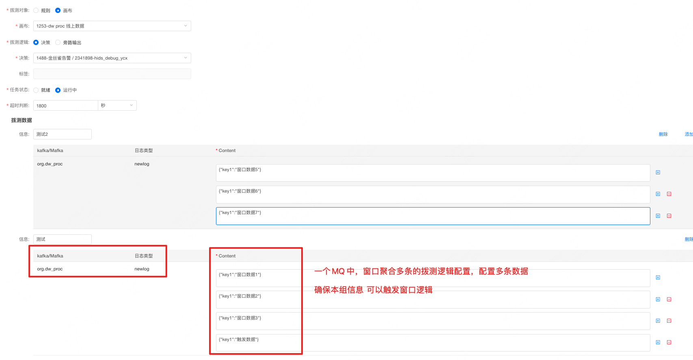
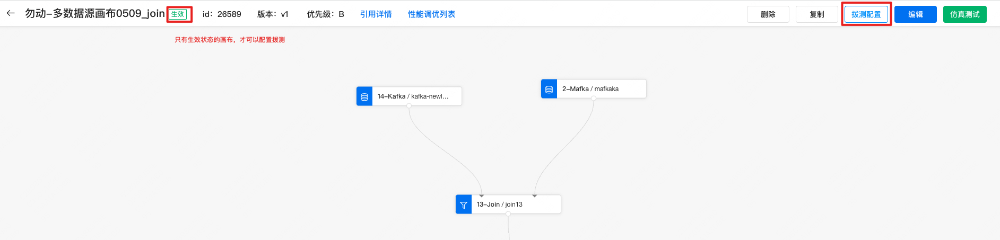
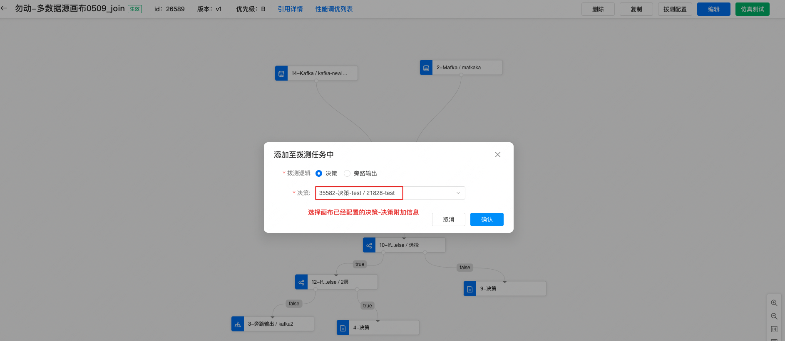
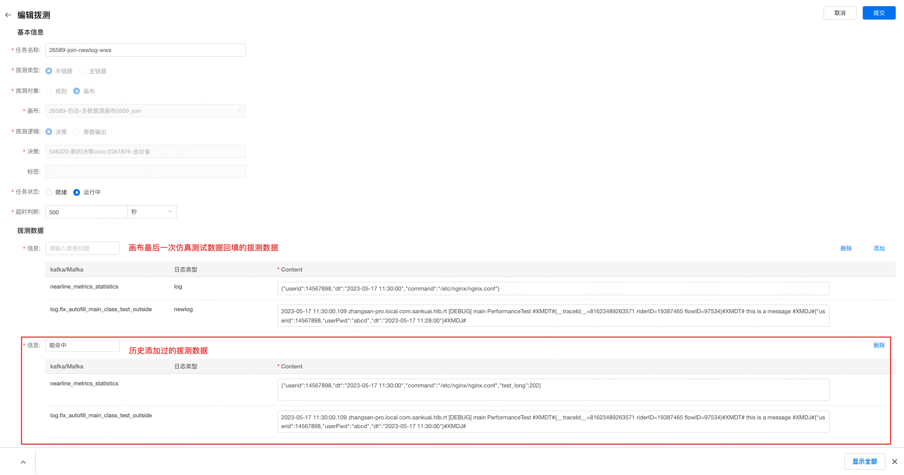

说明：画布拨测
一、背景
在部分安全领域，基于全量数据进行异常行为，当规则命中率或决策命中率比例较低时，无法直接通过线上的命中数据确定策略部署是否正常。需要通过模拟数据命中量统计的方式保障生产策略正常运行。即旁路拨测建设
在基础安全类的对抗场景，拨测逻辑应用较多，本次支持画布布控策略的逻辑拨测。即支持画布输出决策-决策附加信息、旁路输出逻辑的拨测。
二、名称解释
拨测：用户自定义流量调用场景规则/画布获取决策，判断结果是否满足用户诉求的任务配置，确保线上环境作业的有效性
半链路拨测：用户可针对画布决策选择kafka topic数据源进行拨测，只能监测从Zeus处理到金丝雀告警的后半段数据的处理情况
三、操作指南
3.1 用户操作流程说明

3.2 具体页面操作说明
【入口1】
|
说明 |
页面 |
|---|---|
|
安全管理-->拨测管理
|
 |
|
【配置拨测】
|
 
 |
入口2
|
说明 |
页面 |
|
|---|---|---|
|
画布详情-->配置拨测 |
 |
|
|
【配置拨测】
|
  |
3.3 涉及窗口类拨测content配置说明
--待补充--
3.4 拨测告警
- 单次异常告警
近线引擎拨测告警: running拨测结果和预期不符。过去半个小时钟内，拨测设置:画布名称 -拨测任务名称-数据信息 不符合预期的结果或者结果接收超时： 符合预期拨测个数:0，不符合预期拨测个数:2。 [拨测设置|https://zeus.sankuai.com/zeus-server/ajax/rule_platform/dial/get_dial_inspect_setting_by_name?name=autotest_rasp_8186_RASP_Base64%E7%BC%96%E7%A0%81%E5%91%BD%E4%BB%A4%E6%89%A7%E8%A1%8C]。[最近的不符合预期的拨测详情|https://zeus.sankuai.com/zeus-server/ajax/rule_platform/dial/get_dial_attempt?inspectId=20220720110432-b559608b-9d3a-4f3e-a0c0-2556a52bbe3c]。 报警关注人zhanghaoyi02,yucongxiang (已聚合报警)
快速解决：[静默24小时][静默6小时][静默1小时]
- 按日统计告警（每天下午4点 统计24小时内的拨测情况）
标签dbaudit的数据源 拨测本日（昨日16:00至今天16:00）生效拨测成功率为NaN,拨测总数为0。详情参考产品线下各个拨测设置成功率【统计情况】。
标签dbaudit的画布 拨测本日（昨日16:00至今天16:00）生效拨测成功率为NaN,拨测总数为0。详情参考产品线下各个拨测设置成功率【统计情况】。
标签dns的 数据源 拨测本日（昨日16:00至今天16:00）生效拨测成功率为99.96%,拨测总数为2381。详情参考产品线下各个拨测设置成功率【统计情况】。
标签dns的 画布拨测本日（昨日16:00至今天16:00）生效拨测成功率为99.96%,拨测总数为2381。详情参考产品线下各个拨测设置成功率【统计情况】。
四、FAQ
--待补充--